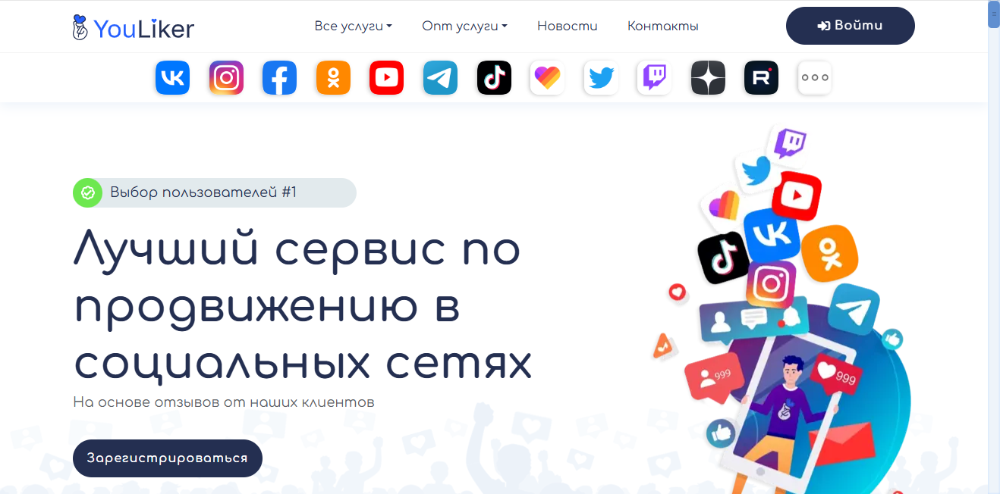
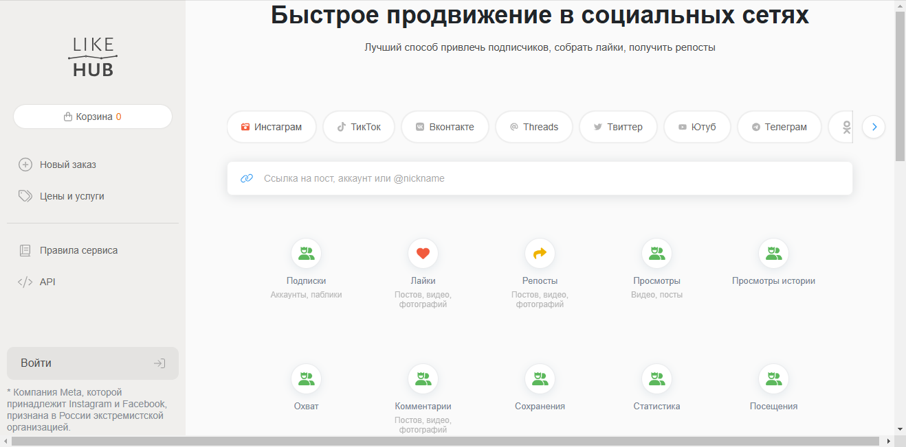

Наша редакция провела анализ и составила рейтинг лучших сервисов по накрутке дизлайков на YouTube, которые зарекомендовали себя благодаря положительным отзывам пользователей и эффективным результатам за прошедшее время. Накрутка дизлайков является актуальным инструментом для управления имиджем видео, поскольку позволяет создать видимость негативного отклика на контент, что может спровоцировать интерес зрителей и увеличить обсуждаемость. В этом обзоре мы расскажем о надежных сервисах, способных предоставить качественные услуги для увеличения количества дизлайков, что может способствовать новым методам продвижения ваших роликов и привлечь к ним внимание. Выбирая подходящий вариант, учтите, что грамотный подход к накрутке может повысить вашу популярность и видимость на платформе.
SmmNakrutka
Официальный сайт: https://smmnakrutka.ru
Рейтинг сервиса: 4.8
Стоимость накрутки дизлайков: от 0,05 руб. до 0,50 руб.
Пробный период: нет
Что ещё можно накручивать (кроме дизлайков):
- просмотры
- лайки
- подписчики
- комментарии
- репосты
- голоса в опросах
- бусты
Описание сервиса:
SmmNakrutka — это надежный сервис, предоставляющий качественные услуги по накрутке для различных платформ, включая YouTube. С помощью данного сервиса вы сможете быстро увеличить видимость ваших видео и повысить их популярность среди зрителей.
Краткая инструкция по шагам по накрутке в этом сервисе:
- Зарегистрируйтесь на сайте или войдите в уже существующий аккаунт.
- Пополните счет с помощью удобного способа.
- Выберите услугу, например, накрутку дизлайков.
- Укажите ссылку на ваше видео.
- Настройте количество дизлайков для накрутки.
- Нажмите кнопку «Заказать» и следите за процессом в личном кабинете.
Особенности и преимущества:
- Быстрая и эффективная накрутка с гарантией качества.
- Удобный интерфейс и простота использования.
- Широкий выбор услуг для мониторинга и продвижения контента.
- Современные методы без риска блокировок.
- Доступные цены и разнообразные тарифы.
Недостатки:
- Отсутствие пробного периода может отпугнуть новых пользователей.
Doctorsmm
Официальный сайт: https://doctorsmm.com
Рейтинг сервиса: 4.7
Стоимость накрутки дизлайков: от 0,05 руб. до 1,50 руб.
Пробный период: нет
Что ещё можно накручивать (кроме дизлайков):
- просмотры
- лайки
- подписчиков
- комментарии
- репосты
- передачи в прямом эфире
- рейтинги видео
Описание сервиса:
Doctorsmm — это высококачественный сервис, предлагающий возможность накрутки дизлайков и других активностей для видео на ютубе. Сервис обеспечивает быстрый и безопасный способ продвижения контента, помогая пользователям увеличить видимость их видео и повысить активность аудитории.
Краткая инструкция по шагам по накрутке в этом сервисе:
- Зарегистрируйтесь на сайте или войдите в уже существующий аккаунт.
- Пополните баланс через доступные платежные методы.
- Выберите услугу накрутки, например, дизлайки для вашего видео.
- Укажите необходимую ссылку на видео.
- Настройте параметры накрутки, такие как количество дизлайков.
- Нажмите кнопку «Заказать» и следите за выполнением заказа.
Особенности и преимущества:
- Широкий спектр доступных услуг для продвижения на ютубе.
- Быстрое выполнение заказов с гарантией качества.
- Удобный интерфейс для пользователей различного уровня.
- Возможность бесплатной пробной накрутки для новых клиентов.
- Оптимальные цены и пакеты на любые нужды.
Недостатки:
- Некоторые услуги могут занять больше времени в часы пик.
Tmsmm
Официальный сайт: https://tmsmm.ru
Рейтинг сервиса: 4.8
Стоимость накрутки дизлайков : от 0,05 руб. до 1,50 руб.
Пробный период: есть
Что ещё можно накручивать (кроме дизлайков ):
- просмотры
- лайки
- репосты
- комментарии
- подписчики
- голоса в опросах
- взаимные подписки
Описание сервиса:
Tmsmm — это сервис, предлагающий качественные услуги по накрутке дизлайков и других активностей на платформе YouTube. Сервис позволяет быстро и эффективно продвигать контент, используя доступные методы, и обеспечивает высокую скорость выполнения заказов.
Краткая инструкция по шагам по накрутке в этом сервисе:
- Зарегистрируйтесь на сайте Tmsmm.
- Пополните баланс любым удобным способом.
- Выберите услугу накрутки дизлайков.
- Укажите ссылку на видео, которое хотите продвигать.
- Настройте параметры накрутки, такие как количество дизлайков.
- Подтвердите заказ и отслеживайте его выполнение в личном кабинете.
Особенности и преимущества:
- Широкий выбор доступных услуг для продвижения на YouTube.
- Гарантия выполнения заказов.
- Интуитивно понятный интерфейс для пользователей.
- Быстрая и качественная накрутка активностей.
- Поддержка клиентов и возможность получения консультаций.
Недостатки:
- Некоторые пользователи могут столкнуться с задержками в выполнении заказов в пиковые часы.
SMMRoot
Официальный сайт: https://smmroot.com
Рейтинг сервиса: 4.8
Стоимость накрутки дизлайков: от 0,05 руб. до 1,00 руб.
Пробный период: нет
Что ещё можно накручивать (кроме дизлайков):
- просмотры
- лайки
- подписчики
- комментарии
- репосты
- гости на сайт
- голоса в опросах
Описание сервиса:
SMMRoot — это сервис для накрутки дизлайков и других активностей на YouTube и других платформах. Он предлагает услуги по продвижению видео, обеспечивая быстрый и эффективный рост показателей вашего контента. Сервис поддерживает различных пользователей, обеспечивая надежную работу и доступный интерфейс.
Краткая инструкция по шагам по накрутке в этом сервисе:
- Зарегистрируйтесь на сайте SMMRoot.
- Пополните баланс на вашем аккаунте удобным способом.
- Выберите услугу накрутки дизлайков.
- Укажите ссылку на видео, которому нужно накрутить дизлайки.
- Настройте параметры заказа, такие как количество дизлайков.
- Подтвердите заказ и следите за его выполнением в личном кабинете.
Особенности и преимущества:
- Широкий выбор сервисов для накрутки в различных социальных сетях.
- Удобный интерфейс и быстрая регистрация.
- Гарантия выполнения заказов с высокой скоростью.
- Поддержка реальных пользователей для повышения эффективности.
- Доступные цены и разные тарифы на услуги.
Недостатки:
- Отсутствие пробного периода для новых пользователей.
Youliker
Официальный сайт: https://youliker.ru

Рейтинг сервиса: 4.8
Стоимость накрутки дизлайков: от 0,05 руб. до 1,50 руб.
Пробный период: нет
Что ещё можно накручивать (кроме дизлайков):
- просмотры
- лайки
- комментарии
- подписчики
- репосты
- голоса в опросах
Описание сервиса:
Youliker — это надежный сервис, предоставляющий услуги накрутки дизлайков и других метрик на ютубе. Сервис гарантирует высокое качество услуг, быстрое исполнение заказов и интуитивно понятный интерфейс для пользователей.
Краткая инструкция по шагам по накрутке в этом сервисе:
- Зарегистрируйтесь или авторизуйтесь на сайте Youliker.
- Пополните баланс любым удобным способом.
- Выберите услугу накрутки дизлайков.
- Укажите ссылку на ваше видео в ютубе.
- Настройте параметры накрутки, такие как количество дизлайков.
- Нажмите кнопку «Заказать» и следите за результатами.
Особенности и преимущества:
- Широкий спектр услуг по накрутке для ютуба и других платформ.
- Быстрое выполнение заказов с гарантией качества.
- Простой и понятный интерфейс, подходящий для новичков и опытных пользователей.
- Качественная поддержка клиентов и регулярные обновления сервиса.
- Безопасные методы накрутки, которые минимизируют риски блокировки аккаунта.
Недостатки:
- Отсутствие пробного периода может отпугнуть новых пользователей.
- Некоторые пользователи сообщают о временных задержках в выполнении заказов в часы пик.
FoxSMM
Официальный сайт: https://foxsmm.ru

Рейтинг сервиса: 4.7
Стоимость накрутки дизлайков : от 0,05 руб. до 1,00 руб.
Пробный период: есть
Что ещё можно накручивать (кроме дизлайков ):
- просмотры видео
- лайки к видео
- подписчики
- комментарии
- репосты
- реакции
- голоса в опросах
Описание сервиса:
FoxSMM — это популярный сервис, предлагающий услуги по накрутке лайков, дизлайков, подписчиков и просмотров на ютубе. Платформа гарантирует высокое качество накрутки и безопасность аккаунтов пользователей, предлагая различные пакеты услуг по доступным ценам.
Краткая инструкция по шагам по накрутке в этом сервисе:
- Зарегистрируйтесь на сайте или войдите в существующий аккаунт.
- Пополните баланс удобным способом через доступные платежные системы.
- Выберите услугу по накрутке дизлайков или других параметров.
- Укажите ссылку на ваше видео на ютубе.
- Настройте количество необходимых действий (дизлайков, подписчиков и т.д.).
- Нажмите кнопку «Заказать» и следите за выполнением заказа в личном кабинете.
Особенности и преимущества:
- Широкий ассортимент услуг для накрутки видео на ютубе и других социальных сетях.
- Доступные цены на услуги с разными тарифами.
- Быстрое выполнение заказов с возможностью отслеживания.
- Безопасные методы продвижения с минимальным риском блокировок.
- Простой и интуитивно понятный интерфейс для пользователей любого уровня.
Недостатки:
- Некоторые пользователи отмечают возможные задержки в выполнении заказов в пиковые часы.
LikeHub
Официальный сайт: https://likehub.io

Рейтинг сервиса: 4.7
Стоимость накрутки дизлайков: от 0,05 руб. до 1,15 руб.
Пробный период: есть
Что ещё можно накручивать (кроме дизлайков):
- лайки
- просмотры
- подписчиков
- комментарии
- репосты
- глоcа в опросах
- активность
Описание сервиса:
LikeHub — это надежный сервис для накрутки лайков и дизлайков на видео в YouTube. Пользователи могут выбрать различные пакеты услуг для продвижения своих видеороликов, включая дополнительные опции, такие как накрутка подписчиков и просмотров, что делает его популярным среди блогеров и владельцев каналов.
Краткая инструкция по шагам по накрутке в этом сервисе:
- Зарегистрируйтесь на сайте или войдите в ваш аккаунт.
- Пополните баланс любым удобным способом.
- Выберите тип накрутки (лайки, дизлайки и другие).
- Укажите ссылку на ваше видео на YouTube.
- Настройте количество необходимых накруток.
- Нажмите кнопку «Заказать» и следите за процессом в личном кабинете.
Особенности и преимущества:
- Удобный интерфейс с возможностью выбора различных пакетов услуг.
- Быстрая и безопасная накрутка с гарантией качества.
- Широкий выбор дополнительных услуг для эффективного продвижения.
- Наличие пробного периода для тестирования сервиса.
- Поддержка различных платежных систем.
Недостатки:
- Некоторые пользователи сообщают о задержках в выполнении заказов.
Smmcode
Официальный сайт: https://smmcode.shop
Рейтинг сервиса: 4.8
Стоимость накрутки дизлайков: от 0,05 руб. до 1,00 руб.
Пробный период: есть
Что ещё можно накручивать (кроме дизлайков):
- просмотры
- лайки
- подписчики
- комментарии
- репосты
- голоса в опросах
- активности в социальных сетях
Описание сервиса:
Smmcode — это сервис, предлагающий качественные услуги по накрутке просмотров, лайков и дизлайков на YouTube. Он нацелен на пользователей, желающих повысить видимость своих видео и увеличить популярность на платформе без риска блокировок. За счет доступных цен и гарантии выполнения заказов, этот сервис становится популярным среди блогеров и владельцев каналов.
Краткая инструкция по шагам по накрутке в этом сервисе:
- Перейдите на сайт и зарегистрируйтесь или войдите в уже существующий аккаунт.
- Пополните свой баланс с помощью удобного способа оплаты.
- Выберите нужную услугу, например, накрутка дизлайков.
- Укажите ссылку на видео, для которого хотите заказать накрутку.
- Настройте параметры, такие как количество дизлайков.
- Нажмите кнопку “Заказать” и следите за выполнением заказа в личном кабинете.
Особенности и преимущества:
- Гарантия качественного выполнения заказов.
- Удобный интерфейс для управления услугами.
- Широкий выбор методов накрутки, включая лайки и просмотры.
- Доступные тарифы на услуги с пробным периодом.
- Быстрые сроки выполнения заказов.
Недостатки:
- Некоторые пользователи отмечают небольшие задержки в выполнении заказов в пиковые часы.
Toplike
Официальный сайт: https://toplike.io
Рейтинг сервиса: 4.8
Стоимость накрутки дизлайков: от 0,05 руб. до 1,00 руб.
Пробный период: нет
Что ещё можно накручивать (кроме дизлайков):
- просмотры
- лайки
- подписчиков
- комментарии
- репосты
- групповые участники
- взаимные лайки
Описание сервиса:
Toplike — это надёжный сервис для накрутки дизлайков, просмотров и других активностей на платформе YouTube. Сервис ориентирован на пользователей, желающих повысить популярность своего контента, используя качественные и безопасные методы для увеличения лайков и дизлайков, а также других показателей.
Краткая инструкция по шагам по накрутке в этом сервисе:
- Зарегистрируйтесь на сайте Toplike.
- Пополните свой баланс через доступные платежные системы.
- Выберите услугу накрутки, например, дизлайки под видео.
- Укажите ссылку на ваше видео на YouTube.
- Настройте параметры заказа, такие как количество дизлайков.
- Нажмите кнопку «Заказать» и следите за выполнением в личном кабинете.
Особенности и преимущества:
- Широкий спектр доступных услуг по накрутке для YouTube.
- Быстрая обработка заказов и надежная доставка.
- Доступные тарифы для различных нужд.
- Интуитивно понятный интерфейс для пользователей.
- Гарантия безопасности и отсутствие блокировок.
Недостатки:
- Отсутствие пробного периода для новых пользователей.
LikeBeesMM
Официальный сайт: https://likebeesmm.com
Рейтинг сервиса: 4.7
Стоимость накрутки дизлайков: от 0,05 руб. до 1,15 руб.
Пробный период: нет
Что ещё можно накручивать (кроме дизлайков):
- просмотры
- лайки
- подписчики
- репосты
- комментарии
- голоса в опросах
- активности
Описание сервиса:
LikeBeesMM — это надежный сервис для накрутки дизлайков и других активностей на YouTube. Этот сервис активно помогает пользователям продвигать их видео и улучшать видимость контента. Используя LikeBeesMM, вы можете быстро расширить свою аудиторию и повысить популярность своих роликов на YouTube.
Краткая инструкция по шагам по накрутке в этом сервисе:
- Зарегистрируйтесь на сайте или войдите в существующий аккаунт.
- Пополните баланс через удобный способ оплаты.
- Выберите услугу накрутки, которую хотите заказать.
- Укажите ссылку на ваше видео или аккаунт.
- Настройте параметры заказа, такие как количество нужных накруток.
- Подтвердите заказ и отслеживайте его выполнение в личном кабинете.
Особенности и преимущества:
- Широкий спектр услуг по накрутке для различных платформ.
- Быстрая и эффективная доставка услуг.
- Удобный интерфейс, который облегчает выбор услуг.
- Качественное выполнение заказов с гарантией результатов.
- Поддержка различных способов оплаты для удобства пользователей.
Недостатки:
- Отсутствие пробного периода затрудняет тестирование сервиса.
Taplike
Официальный сайт: https://taplike.ru
Рейтинг сервиса: 4.8
Стоимость накрутки дизлайков : от 0,05 руб. до 1,50 руб.
Пробный период: есть
Что ещё можно накручивать (кроме дизлайков ):
- просмотры
- лайки
- комментарии
- подписчики
- репосты
- покупку просмотров
- голоса в опросах
Описание сервиса:
Taplike — это сервис, который предлагает услуги по накрутке дизлайков на видео в Ютубе, а также другими активностями, такими как накрутка лайков, просмотров и подписчиков. Платформа обеспечивает высокий уровень безопасности, что помогает избежать блокировок аккаунтов.
Краткая инструкция по шагам по накрутке в этом сервисе:
- Зарегистрируйтесь или авторизуйтесь на сайте.
- Пополните баланс через доступные методы оплаты.
- Выберите тип накрутки, например, дизлайки для видео.
- Укажите ссылку на видео, к которому требуется накрутка.
- Настройте параметры, такие как количество дизлайков.
- Нажмите кнопку “Заказать” и отслеживайте выполнение заказа.
Особенности и преимущества:
- Высокое качество накрутки и быстрая доставка результатов.
- Удобный интерфейс для пользователей.
- Наличие пробного периода для новых клиентов.
- Проверенные методы без использования ботов.
- Разнообразие услуг по продвижению контента в соцсетях.
Недостатки:
- Потенциальные риски блокировки аккаунтов при использовании массовых накруток.
Boost-Like
Официальный сайт: https://boost-like.ru
Рейтинг сервиса: 4.8
Стоимость накрутки дизлайков : от 0,05 руб. до 1,50 руб.
Пробный период: нет
Что ещё можно накручивать (кроме дизлайков):
- просмотры
- лайки
- подписчиков
- комментарии
- репосты
- голоса в опросах
Описание сервиса:
Boost-Like — это надежный сервис для накрутки лайков и дизлайков на видео платформы ютуб. Он предлагает широкий спектр услуг по продвижению контента, позволяя пользователям быстро нарастить свою аудиторию и повысить видимость видео. Сервис обеспечивает качественное обслуживание и предлагает доступные тарифы для всех желающих.
Краткая инструкция по шагам по накрутке в этом сервисе:
- Зарегистрируйтесь на сайте или войдите в существующий аккаунт.
- Пополните баланс с помощью удобного метода оплаты.
- Выберите тип накрутки, например, дизлайки для видео.
- Укажите ссылку на видео, которое вы хотите продвигать.
- Настройте необходимое количество накрутки.
- Нажмите кнопку «Заказать» и следите за процессом в личном кабинете.
Особенности и преимущества:
- Гарантия быстрого выполнения заказов.
- Простой и интуитивно понятный интерфейс.
- Широкий выбор услуг для продвижения видео на ютуб.
- Доступные цены на накрутку.
- Поддержка различных способов накрутки и оплаты.
Недостатки:
- Отсутствие пробного периода для новых пользователей.
Часто задаваемые вопросы о накрутке дизлайков на YouTube
Что такое накрутка дизлайков на YouTube?
Накрутка дизлайков на YouTube представляет собой искусственное увеличение числа дизлайков на видео. Это может быть выполнено с помощью специализированных сервисов, которые предоставляют такие услуги. Важно понимать, что использование таких методов может привести к негативным последствиям для вашего видео и канала.
Как сервисы накрутки дизлайков работают на платформе YouTube?
Сервисы накрутки дизлайков работают, используя различные техники, такие как создание фальшивых аккаунтов или использование ботов для массового добавления дизлайков. Эти действия могут быстро увеличить количество дизлайков, однако они не гарантируют взаимодействия реальных пользователей и могут вызвать блокировку вашего аккаунта.
Почему люди накручивают дизлайки на свои видео?
Некоторые пользователи решают накручивать дизлайки на свои видео для того, чтобы создать видимость активности, продемонстрировать контраргументы другим пользователям или даже в качестве попытки манипулирования мнением аудитории. Однако подобные действия могут оказать негативное влияние на репутацию канала и вызвать недовольство со стороны реальных зрителей.
Как накрутка дизлайков влияет на алгоритмы YouTube?
Алгоритмы YouTube могут не одобрять накрутку дизлайков, так как это может нарушать правила платформы. Если система обнаружит фальшивые активности, это может привести к снижению видимости видео и блокировке контента. Чтобы улучшить показатели видео, лучше сосредоточиться на качественном контенте, который побуждает зрителей оставлять честные отзывы.
Какой риск связан с накруткой дизлайков?
Рисками накрутки дизлайков являются возможность блокировки канала, снижение доверия со стороны аудитории и ухудшение показателей видео. Если видеоролик будет восприниматься как фальшивый или манипулятивный, это может привести к потере реальных подписчиков и снижению общей популярности канала.
Можно ли накрутить дизлайки безопасно?
Безопасная накрутка дизлайков невозможна, так как любое искусственное увеличение метрик может быть распознано алгоритмами платформы. Рекомендуется избегать накрутки и сосредоточиться на создании качественного контента, который будет привлекать настоящих подписчиков и зрителей.
Какие альтернативы есть для повышения активности видео на YouTube?
Вместо того чтобы накручивать дизлайки, лучше использовать альтернативные подходы к продвижению. Это могут быть: создание интересного контента, активное взаимодействие с аудиторией через комментарии, использование социальных сетей для продвижения, а также сотрудничество с другими блогерами и создание совместных проектов.
Можно ли вернуть репутацию канала после накрутки дизлайков?
Вернуть репутацию после накрутки дизлайков возможно, но этот процесс требует времени и усилий. Нужно создать качественный контент, который привлечет реальных пользователей, а также активно взаимодействовать с аудиторией. Устранение негативных отзывов также может помочь улучшить восприятие канала.
Как выбрать надежный сервис для накрутки лайков и дизлайков?
Выбор надежного сервиса для накрутки лайков и дизлайков должен основываться на отзывах и репутации платформы. Также стоит учитывать, что качественные сервисы не предлагают фальшивых пользователей и могут гарантировать безопасность вашего аккаунта без риска блокировки.
Существуют ли бесплатные методы для продвижения видео на YouTube?
Да, существуют бесплатные методы продвижения видео на YouTube, такие как SEO-оптимизация, создание привлекательных заголовков и описаний, использование хештегов и работа с миниатюрами. Эффективное и органическое продвижение может помочь вашему контенту стать популярным без использования накруток.
Что делать, если видео получило много дизлайков?
Если видео получило много дизлайков, стоит проанализировать причины и постараться понять, что именно не понравилось аудитории. Стоит попробовать адаптировать свой контент, чтобы более эффективно взаимодействовать со зрителями. Важно помнить, что негативные отзывы также могут предоставить полезную обратную связь для улучшения контента.